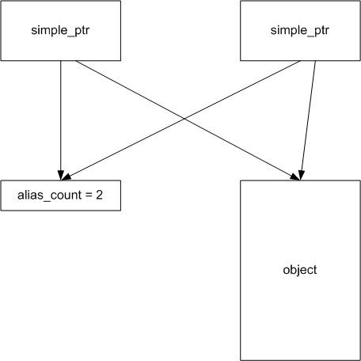

This package is a set of simple pointers that are an alternative implementation to the smart_ptr containers. Different people will have different preferences, so I have included both types of container pointers in the STLplus library. This set of variants was written by Dan Milton.
A simple pointer is a class that acts like a pointer but which also deletes the object pointed to when finished. It is, if you like, a memory-managing pointer.
A simple pointer maintains a pointer to a single object. It also keeps a count of how many simple pointers point to the object. When simple pointers are assigned or 'copied', no copying of the object pointed to takes place, instead the pointer count is just incremented. This is known as aliasing. When a destructor is called, the count is just decremented. This is known as dealising. The object itself is destroyed when the count is decremented to zero, indicating that the last alias has been destroyed.
The existing STL containers already memory manage their contents - for example, when a vector goes out of scope, its destructor will deallocate its contents. However, there are some situations where you need to store pointers, not objects, in containers. Container classes will not deallocate those. These are the situations where a simple pointer is needed.
A simple pointer is basically a pointer with a destructor. The destructor ensures that the object pointed to is deleted when it is no longer being used. You can have multiple pointers to the same object, so the object is only deleted when the last pointer is destroyed.
The simple pointer contains the address of the object pointed to and a counter which stores the alias count. When one simple pointer is assigned to another, the second simple pointer becomes an alias of the first, which means that it is pointing to the same object. The alias count of the object is incremented to show that there are now two pointers pointing to the same object.
This is illustrated in Figure 1:

Figure 1: The structure of class simple_ptr
In this figure, there are two simple_ptr objects pointing to the same object. The simple pointer contains a second pointer which points to the alias count. There is an alias count of 2 because there are two simple_ptr objects pointing to the object.
When a simple pointer goes out of scope or is destroyed for any reason, it is dealiased. This means that the simple pointer no longer points to the object. It's alias count is decremented to show that one less simple pointer is pointing at the object. When the alias count decrements to zero, this indicates that the object is no longer being pointed to by any simple pointers and so it is deleted automatically.
A consequence of the simple pointer design is that if you change the object pointed to by one simple_ptr, it is dealiased first. If it was the only pointer pointing to the old object, then the old object will be deleted. If other pointers were pointing to the old object, they will continue to do so, but the changed pointer will point to the new object and will have a new alias count of 1.
The STLplus simple pointer has three variants. The variants differ only in their ability to create copies of the object pointed to:
Although there are three simple pointer classes, they have almost identical interfaces, so they are described together here (in fact, they are all instances of a superclass called simple_ptr_base, with each variant a subclass of that with a different copy-functor). I use the most common variant - simple_ptr - as the basis of this description and then describe the differences with the variants at the end.
There are four constructors and of course a destructor for simple_ptr:
simple_ptr::simple_ptr(void); simple_ptr::simple_ptr(T* data); simple_ptr::simple_ptr(const T& data); simple_ptr::simple_ptr(const simple_ptr<T>& r); simple_ptr::~simple_ptr(void);
The first of the constructors simply creates a null pointer (it is perfectly legal and correct to have a null simple_ptr).
The second constructs a simple pointer from a pointer to an object. This pointer must be
created using new (if you pass the address of an automatic variable, things
will go horribly wrong). For example:
stlplus::simple_ptr<std::string> s1 = new std::string("Hello World");
The third constructs a pointer from an object. Note however that the simple_ptr copies the object passed in this way. It does not manage the original object. This is because the simple_ptr must contain an object created dynamically (on the heap) using new, and ensures this by doing the allocation itself. To do the allocation yourself, use the second constructor.
Note: in the simple_ptr_nocopy variant, the stlplus::illegal_copy exception will be thrown, since objects cannot be copied. In this case, only the second constructor can be used.
The final form of constructor is the copy constructor - but it doesn't copy the contents of the pointer. Instead it implements the aliasing behaviour of the simple pointer classes.
The destructor implements the other half of the aliasing behaviour. When a simple pointer is destroyed, the alias count is decremented. If this makes it zero, then the object contained by the simple pointer is deleted.
A simple example illustrates how a pointer is constructed and initialised in a single step:
stlplus::simple_ptr<stl::string> s1(stl::string("testing"));
This calls the object copy constructor (the third one above). It creates a string containing the word "testing" and then creates a simple pointer pointing to a copy of that string. The original string will be destroyed immediately afterwards because it is a temporary object.
In fact, because the string class has an implicit type conversion from char*, it can be written more simply than this:
stlplus::simple_ptr<std::string> s2("testing");
Here's another example which constructs two simple pointers to point to the same string:
std::string s = "testing"; stlplus::simple_ptr<std::string> s1(s); stlplus::simple_ptr<std::string> s2(s1);
The first line creates a string initialised with the value "testing". The second line creates a simple pointer initialised with a copy of this (remember that the object contained by the simple pointer is copied into it). The third line creates another simple pointer which is an alias of the first one. Note that the second simple pointer is initialised from the first simple pointer, meaning they point to the same object.
Since both s1 and s2 point to the same string, modifying the string though s1 will result in the string pointed to by s2 apparently changing. However, the string in s1 and s2 is a copy of the original string s, so changing s will not change s1 or s2.
Typically the object is constructed as an anonymous temporary in the call to the simple_ptr constructor:
stlplus::simple_ptr<std::string> s1(std::string("testing"));
Note that an anonymous temporary object can be constructed by using the class name (in this case "std::string") as if it was a function call. This is a common convention in C++.
As is the usual convention with C++ classes, there is an assignment operator corresponding to each constructor with equivalent behaviour (except of course for the void constructor).
First, there is an assignment that allows the object pointed to by simple_ptr to be replaced by a new-allocated object:
simple_ptr<T>& simple_ptr::operator=(T* data);
So for example, you can write:
s1 = new std::string("Hello World");
Once again you must allocate this with new. If you pass a pointer to an automatic variable, the simple pointer will later try to delete it. Similarly, don't pass the address of an object already contained in another data type - both containers will try to delete it.
The purpose of this function is to allow an object to be allocated and then handed over to the simple pointer to be managed by it without incurring the overhead of a copy operation.
When you assign to a simple pointer in this way, it will be dealiased so that all other aliases of it keep pointing to the old object.
simple_ptr<T>& simple_ptr::operator=(const T& data);
This assignment of the contained type T has the same behaviour as above, but the simple pointer class creates a new dynamic object which is a copy of the parameter.
For example:
s1 = std::string("Hello World");
This is slightly strange behaviour - you are assigning a string to a simple_ptr<string>! With C-style pointers this would be illegal, but simple pointers allow it. The old value of the string will be discarded and the new value copied into its place.
There's a final form of assignment:
simple_ptr<T>& simple_ptr::operator=(const simple_ptr<T>&);
This assignment of a simple pointer to another dealiases this smart pointer from any other aliases and deletes the contents if this was the last alias to it. It then makes this simple pointer a alias to the parameter.
void simple_ptr::set(T* data = 0);
This function is functionally identical to the assignment operator which takes a T* argument:
simple_ptr<T>& simple_ptr::operator=(T* data);
It is present in the class because some people prefer its more explicit form.
As the previous section showed, it is possible for a pointer to be null. Of course, it is therefore necessary to be able to test for a null pointer. The simple pointer has a set of four test functions, tests for null and non-null in two forms; explicit (function) form and implicit (operator) form. The implicit (operator) form is provided by the following operators:
simple_ptr::operator bool(void) const; bool simple_ptr::operator!(void) const;
The following examples show how to use these:
if (s1) <non-null handler> else if (!s2) <null handler>
Alternatively, use the explicit (function) form:
bool simple_ptr::present(void) const; bool simple_ptr::null(void) const;
In use:
if (s1.present()) <non-null handler> else if (s2.null()) <null handler>
The simple pointer classes look quite like pointers in use.
To dereference a simple pointer, simply use the * operator just like a pointer. In fact there are two variants of this:
T& simple_ptr::operator*(void) throw(stlplus::null_dereference); const T& simple_ptr::operator*(void) const throw(stlplus::null_dereference);
In other words, if you dereference a non-const simple_ptr you get a non-const reference to the object which you can then read from or write to. If you dereference a const simple_ptr, you get back a const reference which is therefore read-only.
Dereferencing a null simple pointer causes the stlplus::null_dereference exception to be thrown. Therefore if you are unsure whether a simple pointer is null, use one of the logical tests to check first.
Similarly, just as with simple pointers, to dereference and access a member in one go, use the -> operator. There are two forms of this too:
T* simple_ptr::operator->(void) throw(stlplus::null_dereference); const T* simple_ptr::operator->(void) const throw(stlplus::null_dereference);
So, if you dereference a non-const simple_ptr you get a pointer to a non-const object and therefore can call non-const methods. If you dereference a const simple_ptr you get back a pointer to a const object and therefore can only call const methods of that object.
These -> operators can only be used as a prefix to a method call or member access. Because of this it is illegal to use them to access a null pointer and the same stlplus::null_dereference exception is thrown as with operator*.
There are functions with the same behaviour as these operators, to provide a more explicit access to the pointer or value pointed to:
void simple_ptr::set_value(const T& data); T& simple_ptr::value(void) throw(stlplus::null_dereference); const T& simple_ptr::value(void) const throw(stlplus::null_dereference);
The set_value method allows the contents of a simple pointer to be changed:
s1.set_value(std::string("Hello World"));
The value methods allow access to the object in a way similar to the * operator:
std::cout << s1.value() << std::endl;
There is also an explicit form of the -> operator:
T* simple_ptr::pointer(void); const T* simple_ptr::pointer(void) const;
Hint: The pointer() function does not throw an exception, so it is unlike the operator-> form in that way. If the simple pointer is null, then it returns a null pointer.
To show how these operators are used, consider the previous simple pointer to a sring examples:
*s1 += " 1, 2, 3"; s2->insert(s2->begin(), "testing, ");
Note that the +=, insert and begin methods all come from the std::string class.
This leaves both s1 and s2 pointing to a string containing the text "testing, testing 1, 2, 3".
Rewriting to use the functions rather than the operators:
s1.value() += " 1, 2, 3"; s2.pointer()->insert(s2.pointer()->begin(), "testing, ");
It is sometimes desirable to detach two simple pointers to the same object by creating a new copy of the object and making one pointer point to the new object. This is achieved with the make_unique method. What this does is force the pointer being made unique to point to a unique copy of the object. If the pointer is already unique, it has no effect, but otherwise it creates a local copy unique to itself. For example, to make s1 and s2 in the earlier examples point to separate strings, do this:
s2.make_unique();
It is also possible to test whether two pointers point to the same object by using the aliases method, which returns a bool and is usually used in a conditional:
if (s1.aliases(s2)) s2.make_unique();
It is also possible to assign a unique copy by using the copy method:
s1 = s2.copy();
The copy method returns a new simple pointer which contains a unique copy of the contents of the object - in this case s2. This simple pointer is then copied to s1 using the assignment operator - which makes the assignment efficiently by using alias counting methods. The end result is that s1 and s2 now point to different strings containing the same text.
There is an alternative form of the copy function:
s1.copy(s2);
This is functionally equivalent but saves an assignment - which is negligible anyway. However, some people prefer this style.
Note: in the simple_ptr_nocopy variant, the stlplus::illegal_copy exception will be thrown in all these examples.
There are two functions which clear the contents of a simple pointer, making it a null pointer:
void clear(void);
To make a simple pointer null - i.e. to force the object pointed to to be deleted right now, simply call the clear method:
s2.clear();
This dealiases the simple pointer and if it is the last alias, deletes the object and makes the pointer null. However, if the object had other aliases, they will still point to it.
The simple pointer classes can throw two exceptions:
See also the STLplus exceptions policy for a discussion of how exceptions are used in the library
The discussion so far has concentrated on the variant called simple_ptr. This is designed to be used on simple types and classes where a copy can be made by simply calling the copy constructor for the contained object. However, when using hierarchies of derived classes (also known as polymorphic classes), this is not possible because copy constructors are not virtual, so you cannot make a copy this way. This is a well-known problem with C++'s implementation of polymorphism.
The solution to this problem is the cloning variant - a class called simple_ptr_clone. This
variant of the simple pointer is designed for use with polymorphic types. It uses a solution to the
non-virtual copy constructor problem which is suggested by Ellis and Stroustrup in "The Annotated
LRM". The solution is to require the user to provide a virtual clone method for every
class which makes a copy using new and the correct copy constructor, returning the
result as a pointer to the superclass. Each subclass overloads this function with its own variant
which copies its own type. Thus the copy operation is now virtual and furthermore is localised to
the individual subclass.
As an example, consider the simple example of two classes, a superclass called base and
a subclass called derived:
class base
{
...
};
class derived : public base
{
...
};
To make these classes suitable for use in a simple pointer, they must be
made clonable. This is done by adding the clone
method to both classes:
class base
{
...
base* clone(void) const {return new base(*this);}
};
class derived : public base
{
...
base* clone(void) const {return new derived(*this);}
};
Note: the clone method must return a pointer to the superclass, not the subclass. This is
because C++ disallows overloading with different return types. In this case, both clone methods
return a base*.
You then create a simple pointer for this by using the superclass as the template parameter:
typedef stlplus::simple_ptr_clone<base> base_ptr;
The simple_ptr_clone class is identical to the simple_ptr class in its interface. The only difference is in its implementation. In every case where simple_ptr would copy the contained object, simple_ptr_clone clones the object instead.
This variant of the simple pointer is designed for use on objects that cannot (or must not) be
copied. An example would be when managing an object that contains, say, a file handle. It is
essential that this not be copied because then you get the problem of deciding which copy is
responsible for closing the file. To avoid the problem, wrap the file handle in a class and then
manage a unique instance of it using a simple_ptr_nocopy. This ensures that the file
handle cannot be copied and is closed when the last alias is destroyed.
The interface to the nocopy variant is the same as simple_ptr but with all operations
that perform copying forbidden. In fact, because all three variants are instances of a common
superclass, the forbidden methods do exist but will throw the exception
stlplus::illegal_copy if they are called.
The following operations from simple_ptr_nocopy cannot be used because they use
copying of the pointed-to object and will thereore throw the stlplus::illegal_copy exception:
simple_ptr_nocopy::simple_ptr_nocopy(const T& data); simple_ptr_nocopy<T>& simple_ptr_nocopy::operator=(const T& data); void simple_ptr_nocopy::set_value(const T& data); void simple_ptr_nocopy<T>::make_unique(void) void simple_ptr_nocopy<T>::copy(const simple_ptr_nocopy<T>& data) simple_ptr_nocopy<T> simple_ptr_nocopy<T>::copy(void) const